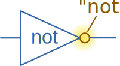
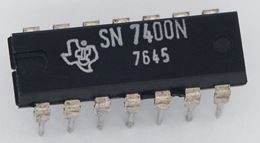
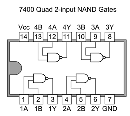

Logic Gates
Logic Gates process true and false values.
And
The "and" logic gate must have both inputs true to become true.
Try clicking on the left hand lines here (green is true and blue is false):
We can show that in a "truth table" (T is for true and F for false):
| A | B | A and B | |
|---|---|---|---|
| F | F | F | |
| F | T | F | |
| T | F | F | |
| T | T | T |
Example: If we cut the grass and wash the car we get ice cream!
| cut grass | wash car | ice cream | |
|---|---|---|---|
| F | F | F | |
| F | T | F | |
| T | F | F | |
| T | T | T |
Only if we do both jobs do we get ice cream
Or
The "or" logic gate can have either (or both) inputs true to become true:
In a truth table:
| A | B | A or B | |
|---|---|---|---|
| F | F | F | |
| F | T | T | |
| T | F | T | |
| T | T | T |
Example: If we cut the grass or wash the car we get ice cream!
| cut grass | wash car | ice cream | |
|---|---|---|---|
| F | F | F | |
| F | T | T | |
| T | F | T | |
| T | T | T |
In this case we can do either job (or both) to get ice cream. Let's wash the car.
Xor (eXclusive Or)
Xor is like or except it becomes false when both inputs are true:
Here we see or and xor side-by-side:
| A | B | A or B | A xor B | |
|---|---|---|---|---|
| F | F | F | F | |
| F | T | T | T | |
| T | F | T | T | |
| T | T | T | F |
Xor is like both your best friends fight. Life is fun with either one, but not both.
Think: "eXclusively yours" (no one else allowed).
Not
We can also "not" or "invert":
- not true is false
- not false is true
As a "truth table":
| A | not A | |
|---|---|---|
| F | T | |
| T | F |
Important: it is the circle at the end that makes it "not":

So we can "not" the other logic gates like this:
Nand
Nand is "and" with a "not", so it is true except when both inputs are true:
We can show that in a "truth table" (T is for true and F for false):
| A | B | A and B | A nand B | |
|---|---|---|---|---|
| F | F | F | T | |
| F | T | F | T | |
| T | F | F | T | |
| T | T | T | F |
Nor
Nor is "or" and "not", so is false when either (or both) inputs are true:
In a truth table:
| A | B | A or B | A nor B | |
|---|---|---|---|---|
| F | F | F | T | |
| F | T | T | F | |
| T | F | T | F | |
| T | T | T | F |
Xnor
Xnor is xor with a not:
As a truth table:
| A | B | A xnor B | |
|---|---|---|---|
| F | F | T | |
| F | T | F | |
| T | F | F | |
| T | T | T |
Xnor is true when both inputs match (both true or both false).
All Together Now
Here they are together:
| input |
output | |||||||||
| A | B | and | nand | or | nor | xor | xnor | |||
|---|---|---|---|---|---|---|---|---|---|---|
| F | F | F | T | F | T | F | T | |||
| F | T | F | T | T | F | T | F | |||
| T | F | F | T | T | F | T | F | |||
| T | T | T | F | T | F | F | T | |||
See them in action here (try clicking on the name, or the output line):
In the Real World
This classic chip has 4 nand gates on it:

It's circuit diagram looks like this:

Example: you can connect pins 1 and 2 to different inputs, and will get an output from pin 3 except when both pins 1 and 2 are on.
(Note: power supply of 5 volts between "Vcc" and "GND")
There are many variations of these chips with different logic gates inside them. They operate really fast (millions of times a second), use very little power and cost very little. You can combine them to do amazing things.